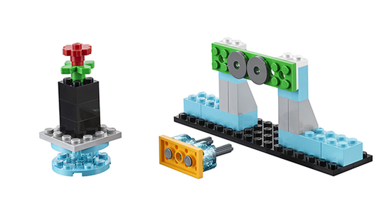

模型特征
学生将搭建一只机械手，并进行编程，使机械手可以抓取、举起和放下物体。机械手配备运动传感器，可用于探测物体、桌子或手臂的动作。
学生将使用此机械手移动较小的物体。第一项任务是抓取花朵并将花朵放到桌子上。第二项任务是抓取电源插头并将插头插入插座中。学生也可以自己搭建物体用于任务中。

学生将搭建一只机械手，并进行编程，使机械手可以抓取、举起和放下物体。机械手配备运动传感器，可用于探测物体、桌子或手臂的动作。
学生将使用此机械手移动较小的物体。第一项任务是抓取花朵并将花朵放到桌子上。第二项任务是抓取电源插头并将插头插入插座中。学生也可以自己搭建物体用于任务中。
